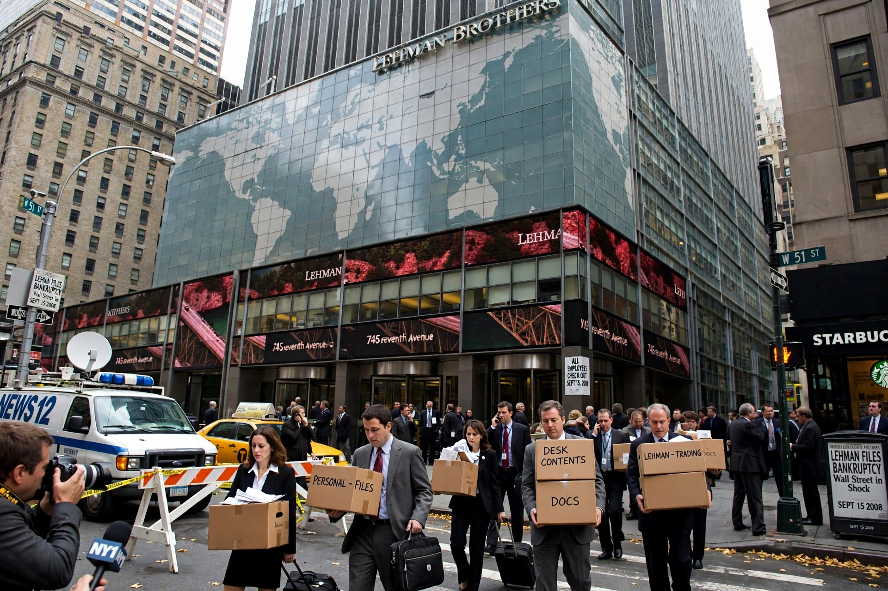

From Wikipedia, the free encyclopedia
| Lehman Brothers Holdings Inc. | |
|---|---|
 | |
| Founded | 1850, Montgomery, Alabama |
| Defunct | 15 September 2008 (bankruptcy) |
| Headquarters | 745 Seventh Avenue, New York City |
| Industry | Investment banking, financial services |
| CEO at collapse | Richard S. Fuld Jr. |
Lehman Brothers Holdings Inc. was an American global financial services firm founded in 1850. Before filing for bankruptcy in 2008, Lehman was the fourth-largest investment bank in the United States, with about 25,000 employees worldwide. Its bankruptcy filing, with $613 billion in debt, remains the largest in US history and is regarded as the pivotal event of the 2008 financial crisis.
German immigrant Henry Lehman founded a dry-goods store in Montgomery, Alabama in 1844; with brothers Emanuel and Mayer it became Lehman Brothers in 1850, trading cotton and later moving to New York, underwriting railroads and emerging industries and surviving the Great Depression. It became a major Wall Street house, was acquired by American Express in 1984 and spun off again in 1994.
Lehman expanded aggressively into mortgage origination and real estate, holding large positions in subprime-related securities as the subprime crisis deepened. Losses, high leverage and collapsing confidence destroyed rescue attempts — unlike rivals, it received no government bailout. On 15 September 2008 it filed for Chapter 11. Barclays acquired its North American broker-dealer business and Nomura bought units in Europe and Asia; its estate wound down claims for over a decade.